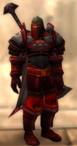

Joué par :
Turannos Joué par :
[ Information masquée ] Sexe : Homme
Race : Humain
Faction : Alliance
Formation : Paladin
Niveau : 56
Guilde :
Description : ( Turannos est simplement un "méchant" autrefois membres d'une armée de fanatiques et à présent Chevalier Noir errant, j'ai préféré enlever mon ancienne description car je trouvais qu'elle prenais trop de place, je l'ai remplacer par 2 petits extrais en esperant qu'il vous donnerons envis d'en savoir plus sur ce sombre personnage,
Amicalement, Le Chevalier Noir ^^.)
[ un Extrait de la 3ème ère ] Templiers de Tyran
"L'hérétique a dévisagé un moment inquisiteur Cet, il demeurait figé, il ne s'était sûrement pas attendu à le voir débarquer, puis son regards s'est tourné vers les deux soldats de l'inquisition, celui déguisé en civil, et enfin vers nous.
Il s'est soudain redressé et à préparer un sort d'ombre, nous nous sommes précipité sur lui en renversant des chaises dans un vacarme épouvantable, son éclair d'ombre a désarmé frère Hellfrum, envoyant sa hache s'abattre dans le plat du guerrier au fond de la pièce.
Le familier se jeta sur l'un de nos Templiers, un second éclair envoya une table sur Lusian , Inquisiteur Cet et moi nous propulsant à terre, un cris discordant a étourdi notre deuxième Templier et les deux soldats de l'inquisition qui se sont mis à courir dans tous les sens en se tenant la tête. Alors que je me relevait péniblement je vis Hellfrum abattre violement un morceau de pied de table sur la figure du démoniste, il s'écroula.
Nous nous extirpâmes et nous lançâmes sur le démon le ruant de coups, il s'effondra, le Templier qu'il avait attaqué était blessé mais vivant, son armure étaient bien amoché néanmoins elle l'avait sauvé.
« Par Tyran ! J'honorerai mon équipement en rentrant », dit-il en se relevant difficilement.
J'ordonnais au second templier de ravier le feu de la grande cheminé, nous allions incinérer le démoniste et son molosse.
Inquisiteur Cet hissa le démon et le largua dans le feu, les flambeaux on réanimé le monstre qui s'est mis a hurler de souffrance et a tenter de se déloger, nous avons refoulé les brasiers à coups de bottes de plates afin d'enfouir la bête au plus profond de la cheminé, elle a continuer à beugler durant quelques secondes avant de commencer à cuire, ne dévoilant au travers des flammes que ses membres calcinés."
[ Extrait IVème ère ] Le Chevalier Noir
"Derrière la visière de mon casque je n'avais plus de figure, mais un vide noir, d'un noir aussi profond que le regard de l'aigle qui était venu a ma rencontre. J'ai glissé mon gantelet par le trou de la visière rien je ne suis plus de chair et je ne sens rien.
Un bruit de poudre à attiré mon attention, je me suis retourné, le paysan se tenait dans l'escalier face à moi avec une vielle carabine de chasse, la terreur se lisait dans ses yeux.
J'ai poussé un rire sardonique quand j'ai vu la balle rebondir sur le plancher, ma voix était grossière donnait une impression d'écho et de résonance.
L'homme à recharger son arme avec panique, j'ai tendu mon bras, il a émit un second coup de feu, j'ai ouvert mes doigts face à lui et laissé la balle retomber sur le sol.
Il est rester pétrifié c'est mit à pleurer, c'est laissé s'effondrer sur une marche sachant que la fin était sur lui et je me suis rapproché en riant"
L'origine de la Templière Noire.
I
Les fondations de cette Templière remontent à des temps anciens, apparu probablement pendant l' âge qui succédait la découverte des Orques par les hommes.
Les siècles et surtout les nombreuses guerres ont pratiquement effacé toutes marques et souvenirs de l'existence de cet Ordre antique.
La Templière Noire était à l'origine une sorte de cloître, apparue sûrement dans les égouts ou canaux d'un royaumes, cette organisation était composées de fidèles qui imploraient et honoraient une Lame ancestral qu'ils avaient découvert.
Ils la baptisaient la "lame de Justice" ,ces hommes affirmaient que grâce à cette relique ils pouvaient flairer l'arrivée d'un mal effroyable qui allait s'abattre sur le monde dans les prochaines décennies.
Au début, cette petite confrérie s' étendit dans l'ombre et peut à peut, elle pris en vigueur jusqu'à ce que cette communauté puisse vivre en autarcie.
Un sanctuaire fut construit sous terre, creusé dans la roche, afin que les fidèles puissent poursuivre leur devoir et la formation de futurs soldats. Les moines guerriers que l'Ordre concevait furent appelés « Templiers Noirs » en raison des lourdes armures de plates à l'allure très sombre dans lesquelles ils étaient engoncés.
Selon eux, l'humanité devait s'unir toute entière sous la bannière de lame de justice pour parvenir à chasser le fardeau qui plane sur ce monde dès que l'heure serait arrivée et que le mal surgirait.
L' ordre gagna en renom, son objectif étaient par logique de souder sous leur commandement les royaumes des différentes contrées humaines, mais bien sur quel roi aurai reçut ces requêtes ?!
les hauts officiers de la Templière ou "gardiens" revendiquaient le pouvoir absolue de l'épée et non celui de la couronne, les rois les voyaient donc comme une bande de fauteurs de troubles hallucinés qui allaient déranger la sérénité de leurs terres ; ils les chassèrent fermement des portes de leur cités.
Les Templiers noirs frustrés de ce jugement rebaptisèrent leur lame «La Tueuse des rois » aspirant qu'elle finirait par mettre à bas tous les faux-rois, pire encore, ils considéraient à présent comme opposants tous êtres qui contestaient à rentrer dans « leur combat pour la survie de l'espèce », les hommes devaient adhérer au nouvel Ordre ou périr.
Cela prit vite une ampleur très dangereuse, les croisés de la Templière Noire se mirent à massacrer quiconque refusait de fléchir devant leur culte, décimant les simples paysans comme les nobles, brûlant des villages reculer, poussant les gens à les rejoindre et injuriant les domaines des suzerains, évoquant le faite que tout cela était pour le salut de l'humanité.
Les royaumes sursautèrent à la découverte de ces actes et réagirent fermement bien que tardivement; traquant sans relâche et tuant sans trop de difficultés les membres du cultes ,qui, bien que doté d'une résolution de fer demeuraient trop peut nombreux pour faire face à la puissance des armées des royautés ; de plus la recherche des Templiers n'était pas une mission ardue car ceux-ci n'hésitait pas à hurler haut et fort leur allégeance et qu'ils renverseraient les faux-rois.
Une fois le repère des templiers encerclé il fut assiégé et anéanti.
Peut avant que la templière ne soit rasée, les cinq gardiens fondateurs se réfugièrent en un endroit secret avec la lame et ils disparurent par mystère avec l'objectif de ressurgir bien plus tard, quand l'heure serait à nouveau venue.
Et le monde oublia l'existence du culte
II
Durant tout ce temps les hommes continuaient à batailler les Orques et autres races qu'ils considéraient comme dangereuses.
La Templière Noire réapparu bien plus tardivement, pendant l' écroulement de Lordaeron.
Alors qu'un lointain cousin de la famille royal de Lordaeron était présent dans les jardins du royaume qui tombait en ruine tout autour de lui, là, habité par la haine et le chagrin son âme se laissa capturer par les spectres des cinq gardiens, qui avaient comme prévu ressurgit là où le monde sombrait.
Le nouvel être créé de l'amalgame de l'humain et des fantômes n'était plus de nature mortelle mais une sorte d'être divin, cette nouvelle entité se proclama Seigneur Tyran de la Templière Noire.
Tyran quitta la ville qui s'effondrait et rassembla les hommes qu'Il croisait dans les régions aux alentours, plus souvent d'anciens soldats errants, ou des hommes dont les vies avaient été brisé par le fléau, Il emporta aussi les enfants qu'Il découvrait afin de les faire intégrer au culte de la Templière Noire le plus hâtivement possible.
Tyran combattu également des membres de la croisade écarlate qui semblaient avoir des objectifs similaires.
Une fois suffisamment d'hommes sous sa domination, Tyran les mena vers le lieu secret des ancêtres : La Citadelle souterraine, la bastille fortifiée sous terre où était dissimulé la Tueuse des rois.
Tyran parvint jusqu'au sépulcre qui n'avait été encore découvert de personne, la lame était au centre, enfoncée à la vertical sur un monstrueux socle de marbre, dès que l'esprit des cinq gardiens perçurent que leur hôte empoignait la Lame, le choc de toutes les essences des anciens exaltés qui étaient emprisonnés dans la relique fut si puissante que tous les mortelles à proximité furent aussitôt envahit par les esprits délivrés et par le désir de servir la Templière avec autant d'exaltation et de zèle que les défunts Templiers.
La Templière Noire était réapparue en Azeroth
Décade de l'Ours
Lune d'Agilité [7]
Décade du Tigre
Décade du Singe [4]
[Histoire] Arrivée en Azeroth
« Partout nous chassons les démons où ils se terrent. les ténèbres sont les lieux de nos histoires, nous sommes la candeur au cur de la faute, les séraphins de la mort aux voilures angéliques qui apporterons la destruction aux ennemis de l'humanité, la décadence, les incertitudes et l'orgueil n'auront j'aimais prises sur nous.
Nos esprits : forteresses inaccessibles.
Instruments de Sa résolution, nous nous unissons sous l'étendard de la Grande Croisade Puritaine, vers l'ultime reconquête qui façonnera l'Empire humain, puissant comme il n'a encore jamais été fait !
Sur les terres de ce monde et même au delà, le simple fait de formuler le mot « humain » engendrera les paniques et les craintes perpétuelles de la part de tous les ennemis de Tyran.
Les infidèles seront talonnés sans relâche jusqu'à leur tanières, leurs miteuses fondations seront renversées et pas une pierre ne demeurera sur l'autre, nulle icônes impies à notre Ordre ne tiendra.
Tel est la destinée de l'humanité, tel est notre devoir.. seul la mort y mettra terme. »
De nombreuses voix résonnent de derrière moi:
- Nous ne demandons qu'à servir l'immortelle Tyran.
les Templiers étaient prosternés en rang derrière moi, la tête toujours baissée afin de ne pas défier le regard de notre suzerain.
La méditation m'avait fait oublié que nous étions dans la chapelle de la forteresse souterraines et les sonorité de mes frères m'avaient ramené à la réalité.
A présent que nos esprits avaient suffisamment puisé sérénité, force et courage nous étions près à rentrer en communions avec l'Empereur Tyran.
Sa parole vint, elle ne semblait pas humaine, très grave, sinistre:
« Votre foi est grande mes fidèles, à présent l'heure est venue de guider les hommes vers la voie du salut, vous allez sortir de la chapelle et vous conduire vers le cloître des magiciens, ils vous invoquerons dans les contrées damnées de Lordaeron.
Une foi sur place vous partirez en pèlerinage pour regagner la lointaine cité de Stormwind où vous devrez tout entreprendre pour rassembler d'autres futur Templiers Noir, informer le roi de notre existence et l'appeler à se joindre à notre juste cause.
Turannos, mon champion tu va aujourd'hui entamer la mission la plus déterminante de ta vie, ne revient ici qu'une foi que ta tâche sera achevée ou ne revient jamais. »
- Mon souhait est l'éternel service maître et je ne reviendrais qu'après avoir accomplit ma mission.
Le chapelain prit la parole: Les hommes effondrés en Son nom vivront éternellement dans Sa mémoire et Que notre foi ne laisse jamais place à la lâcheté ! Partons accomplir notre devoir mes frères. et nos âmes festoieront à Sa droite pour l'éternité !
Nous nous relevâmes dans un bruit assourdissant d'armures qui s'entrechoquent et nous dirigeâmes vers la sortie en veillant à ne pas tourner le dos à notre Maître, notre quête venait de commencer.
[Histoire] Fin du pèlerinage
La forêt était calme et paisible, nous étions arrivés finalement en Elwin, cela faisait douze jours que nous voyagions vers Stormwind.
Nous étions parvenu à un petit village au sud de la capital, j'inspectais les logements et je vis une pancarte sur celle qui se trouvais à ma droite : « Auberge de Goldshire » s'exclama frère Lusian comme s'il avait suivi mon regard.
Lusian était un grand officier et un grand combattant, je me souvenais de notre arrivée dans la région de Lordaeron il y a douze jours, l'invocation des mages avait été approximative et nous nous étions retrouvé plus au nord juste à l'entrée d'une sorte de grande église.
Comme nous le savions les premières minutes suivant notre invocation étaient les plus désagréables.
Je me souviens que j'avais été pris de nausées très violente et que certain soldats vomissaient. Alors que je venait à peine de reprendre mes esprit un bras me pris par l'épaule, c'était lui qui criais en pointant du doigt des hommes qui se rapprochaient, je n'ai pas tout retenus mais je me souviens qu'il avait prononcé plusieurs fois « Des écarlates ! ».
Ce premier affrontement fut le plus violent de tout notre voyage.
Dès que mes sensations émétiques furent atténués je vis les croisés qui nous dévisageaient hébétés par notre arrivée soudaine, l'un d'eux qui semblait le plus haut gradé brama à ses hommes de charger.
- Resserrez les rangs sur le flan gauche mes frères ! à l'attaque purifions ces fous, chargez ! hurlai-je
Tous les Templiers et moi attaquèrent en braillant un hurlement guerrier à l'instant ou nos opposants effectuaient la même chose.
Le choc fut violent, les boucliers de la première ligne volèrent en éclat, le bruit du fer était assourdissant, certain de nos hommes s'écroulaient mais très vite la bataille tourna en notre avantage, tous les Ecarlates étaient tombés, nous étions victorieux.
A la fin de la bataille nous fîmes une brève prière à Tyran, qui par Sa grâce nous avait donné la victoire, nous brûlâmes nos frères effondrés durant la bataille et poursuivîmes notre chemin.
Le reste de notre excursion fut difficile mais rien de comparable, nos principaux ennemis n'étant que de simples mort vivant, ou zombis.
« Maître Turannos ? entrons-nous à l'auberge pour ce soir ? » Demanda Lusian.
- Affirmatif ! nous tâcherons de réquisitionner quelques chambre.
Cela faisait un moment que nous n'étions pas allé à l'auberge, en faite notre dernière halte avait été à celle de southore, les autres soirs nous avions utilisé les tentes.
A la tête de mes hommes nous pénétrâmes dans la taverne par l'entrée principale.
L'auberge était joyeuse, les clients se divertissaient, buvaient, braillaient dans tous les sens, puis l'air devint d'un seul coup plus silencieux. La masse des consommateurs s'est figé devant nos lames, nos lourdes armures sinistres qui ne laissait entrapercevoir que de rare parcelle de peau, hormis les Templiers de base qui étaient équipés d'une colossale armure dont le plastron montait jusqu'au niveau du nez et qui ne laissait entrevoir que leur cerne sous les yeux et la partie supérieure de leur crâne pâle complètement dépourvu de cheveux.
Frère Hellfrum s'avança, c'était un des rares nains qui demeurait dans la Templière.
« Aubergiste ! nous ; Templiers Noirs réclamons le couvert pour ce soir et des chambres à notre disposition . » répliqua t-il
Un vielle homme surgit du fond de la taverne et se faufila jusqu'à nous comme un couard .
Il nous examina un peut abasourdi de voir tout cet attroupement et dit :
- Mais bien sur chevaliers, je vais vous installer.
Il fit signe à quelques clients qui était à la table près du fond de la quitter et nous demanda de nous y établir.
Je m'y plaçais donc suivit de tous mes hommes, ils s'essayèrent et décrochèrent la parti supérieur de leur plastron qui cuirassait leur nez et leur bouches.
Les clients retournèrent à leur occupations faisant semblant de ne pas prêter attention à nous.
Très vite on nous servit quelques chose à manger, nous priâmes ensemble Tyran, pour le remercier de guider notre foi et notre courage chaque jour. Je remarquais que certaines personnes nous regardaient les yeux écarquillés se demandant probablement qui nous étions, mais aucun de réagit, étant donné que mes soldats lançaient un regard pesants, plein de reproches qui assurait un futur incertain à quiconque aurait été susceptible de rompre cette prière à notre Seigneur.
Finalement, nous mangions en silence, songeant à tout ce que nous avions enduré durant notre voyage, la soirée allait être courte nous avions tous besoin de repos.
[Histoire] Arrivée à Stormwind
Je progressai sur une grande allé, de chaque coté était visible d'éminentes statues aux figures de valeureux qui avaient marqué les mémoires des hommes ; au loin, je distinguai de prodigieux monuments admirablement réalisés ; la cité de Stormwind !,
J'avais toujours spéculé que cette nation ne renfermait rien d'égal avec l'ancien Lordaeron et je m'était leurré, sa splendeur et son éclat me stupéfiait.
Alors que j'avançai dans l'allé j'aperçu deux gardes se faire signe, s'orienter vers moi et m'apostropher, l'un d'eux s'écria : « qu'es ce donc que ceci chevalier ?» en pointant le doigt à la hauteur de mon épaulière gauche.
Stupéfié, j' examinait mon épaule sans saisir ce que me voulait le garde.
« Le crâne là! » réprimanda t-il.
Je m'étonnai de ne pas y avoir fait attention en m'inspectant, l'accoutumance sûrement
-Oh, c'est un de mes trophées de guerre, un infidèle servant le fléau que j'ai bagarré il y à fort longtemps. Répliquai-je.
-Il est purement interdit d'exhibé ce type de butins en ces lieux, je vous rappelle aussi qu'il y a des enfants en ville.
L'autre garde me scruta et me dit à son tour :
-Vous ne paraissez pas d'ici chevalier à l'armure lugubre, déclinez votre identité !
-Je me nome Turannos, de la Templière Noire ! Champion avéré du seigneur Tyran et j'arrives pour incorporer ce royaume sous l'étendard de l'éminente croisade afin de reconquérir le saints domaine de Lordaeron, je souhaiterais me présenter au roi !
Les deux gardes se sont observé ahuri, sans dialoguer un moment puis l'un me répliqua un peu troublé :
-Templier Noir ? Seigneur Tyran, ? Je n'ai en aucun cas eu vent de l'existence d'un Ordre appuyant ce blason, vous désireriez voir le régent du roi, rien ne me démontre que vos desseins sont honnête paladin noir, et même si vous m'établissiez le contraire sachez que l'on ne s'introduit pas dans les appartements du roi ou Benedictus comme dans un cabanon !
Soudain, une voix surgie de plus loin derrière moi,
-Maître Turannos ! maître Turannos !
C'était frère Lusian, il paraissait affairé et me fesait signal de venir rapidement. Je me retournait donc vers les gardes pour finir notre discussion :
-Ma mission est de transmettre au roi l'appelle à la reconquête de mon Seigneur, puisque je ne peut pas le rencontrer en homme alors un de mes soldats vous cédera une dépêche tantôt, et nous espérerons sa réponse.
-Soit faite ce que vous avez à faire mais je vous garde à l'il, je ne suis pas encore sur que vos attente soient lumineuses.
Je m'éloignait rejoindre Lusian.
[Histoire] La corruption
Lusian m'avait mené jusqu'à l'extrémité du bois de Elwin ; là quelques Templiers encerclaient une jeune dame qui offrait tout d'une demoiselle ordinaire
C'était abject ! à ses pieds était présent un démon, sorte de diablotin qui gambadait, riant et émettant un dialecte hérétique.
Un Templier nous voyant arrivé lui dit : « Alors, ainsi ce diable est à vous ? »
-Bien sur qu'il est à moi ! l'initiatrice démoniste m'a former à invoquer ces créatures et dominer l'énergie de l'école de l'ombre. Répliqua t-elle.
-Vous affirmer donc être une renégat diabolique !Méprisable serviteur du fléau !
-Plait-il ? non je suis au service de l'alliance, je contrôle l'ombre pour mieux soutenir le royaume, ce n'est point hérétique ni hors la loi que je sache.
J'était sidéré ! comment le royaume pouvait supporter l'existence de démonistes, surtout après la perte d'un domaine et la trahison d'Arthas. Les démons ne souhaitent que la ruine du vivant et les personnes se pensant capable de parvenir à les commander ce fourvoie gravement; le démon manipules constamment l'esprits et le corromps tôt ou tard.
-Vous bluffez s'écria. frère Hellfrum
-Traîtresse !!! Grogna un autre Templier
-J'exige que vous me laissiez passer. Bégaya la femme.
-Un moment d'égarement entraîne une vie d'hérésie !
Des épées se dégainèrent de leur fourreau
-Je mais vous étés fou. Balbutia t-elle.
-Vous vous bernez nous allons laver votre faute !
-Nettoyons la corruption et remettons nous en route frères.
La femme baragouina quelque chose d'inaudible, son démon commença à appeler une sphère de flamme, elle sortie une dague braquant le soldat face à elle.
-Cesse et repent toi ! M'écriai je en écrasant le diablotin sous mes volumineuses bottes de plates.
-Crève ordure ! Ton allure de jeune femme naturelle ne troublera pas ma foi ! rétorqua un frère en lui clouant sa lame dans l'abdomen.
La femme vomi une gerbe d'hémoglobine, demeura figé quelques secondes, scrutant le paysages comme si elle n'avait pas encore sentit le choc.
Le deuxième coups lui traversa la férocement la poitrine, elle s'écroula, le Templier prie appui avec son pied droit sur sa dépouille pour mieux dégager sa lame.
-Frère mage ! immolé cette zone, l'hérésie prolifère comme une peste il ne faut rien laisser Dit frère Lusian.
Le cadavre fut consacrée dans les flammes du purgatoire, nous lui avons dissous sa violation par la mort, j'espérait qu'il n'y ai pas trop de personne corrompu, en tout cas nous purifierions ces terres tant qu'il le faudrait.
Décade du Faucon [3]
[Histoire] Implantation
Notre récente arrivée et nos comportements dans les contrées de Stormwind n'ont pas tardé à se répandre, du fait de l'intrigue que nous dégageons auprès de la peuplade et même du royaume.
De nouveaux enrôlés se sont incorporés à la doctrine de Tyran, il s'avérerait que certains citoyens de Stormwind perçoivent l'appelle du conflit et la nécessité de se lier à une communauté très soudé.
Nous avons aussi décelé de graves échos, il paraîtrait que nous ayons éveillé les appréhensions de la part de certaines guildes pour la paix qui désireraient s'opposer à nos opérations.
La paix ! Cela nous faisait divinement sourire ! Le fléau prend chaque jours plus d'opulence, la souillure et la corruption n'ambitionnent pas d'accord ni d'équilibre avec les mortels et convoitent notre déclin, elles nous menacent de ce fait d'extinction, alors comme si la paix pouvait exister à notre époque !
Par ailleurs le régent du roi n'a pas prétendu à nous rencontrer, mais manifestement notre apparition à intrigué une branche secrète de l'église : La Sainte Inquisition.
Un de nos indicateurs nous a averti qu'il avait débattu avec un exorciste alors qu'il sillonnait Darkshire, il m'a cédé une dépêche dans la quel un certain baptisé : Inquisiteur Cet désirerait s'entretenir avec le mandaté de la Templière Noir le troisième jour de la décade du faucon.
« Par la grâce de Tyran l'immortel nous émergeons admirablement, et nous prenons en vigueur !» c'était applaudi frère Hellfrum ce jour là, il demeurait fier que l'église nous ai contacté et que nous nous établissions dans de nouveaux logements.
En effet, cela faisait actuellement trois jours que nous disposions de récents appartements en Stormwind, un grand temple nous avait été convié au faubourg des nains, nous projetions au début de le réquisitionner du fait que nous étions envoyé de Tyran, mais demeurant encore étranger à la cité et purement toléré j'avais compris qu'une location était plus éventuel pour ne pas alourdir les complications, de plus, la vaste salle somptueusement disposée, les armoires à armes, armures et les locaux pour nos soldats méritaient une rétribution convenable.
Nous avions aménagés de hautes bannières sur les murs à l'image de nos armoiries, les responsables de Stormwind avaient seulement grommelé mais renonçait à nous exiger de les ôter.
J'ai d'ailleurs appris d'un soldat que La Sainte Inquisition siégeait au cabinet des plaintes sur la place de la cathédral.
Nous étions établi, préparé à les recevoir dès demain..
[Histoire] La Sainte Inquisition
L'individu était grand malgré qu'il paraissait assez âgés, une longue barbiche grise continuait son menton, sa figure avait des rides très marqués bien que peut creusées, ces dernières lui apportaient une physionomie austère et un peu orgueilleuse, il avait l'allure d'un homme direct et rigoureux.
Sa décence était éclatante, une grande toge blanche immaculées recouvrait intégralement son corps et s'abattait jusqu'à caresser le sol, un capuchon lui dissimulait la chevelure et les oreilles.
Il était accompagné de deux individus, une femme et un homme portant un blason identique au sien, j'en déduit qu'il s'agissait sûrement de ses suivants qui l'escortait.
L'homme s'avança jusqu'à moi puis s'immobilisa. Il examina la pièce, nos écussonnes et ornementations puis pris la parole, sa voix mêlait avec stupéfaction l'avarice et la sagesse :
« Je me nomme Inquisiteur Cet, haut mécène de la sainte église de Stormwind au service de Bénédictus et voici à ma droite Dame Aeternam notre exorciste et frère H. à gauche. Je suis le garant de mon Ordre secret : La Sainte Inquisition, tout ce que nous dirons en ce jour devra rester confidentiel. »
Je présentais donc frères Lusian et Hellfrum qui demeuraient à mes cotés, puis moi même.
Nous étalâmes l'un après l'autre l'essentiel des préceptes de nos organisations n'expliquant que ce qui était strictement utile.
Je fut agréablement surpris puisque Inquisiteur Cet ne parut pas prêter de perplexité ni de méfiance à l'égard de notre bienfaiteur : Tyran, contrairement à la plupart des hauts responsables que nous avions rencontré auparavant.
Mais nous avions de nombreux de aspects en communs, j'ai remarqué que le regard de Cet s'est mis a briller quand nous avons réciter de succincts passages du grimoire de la foi : la bible de notre Templière, il a réagit à la litanie : Négocier c'est capituler , où il a par ailleurs répliqué :« Que de paroles de cristal Templier Turannos ! ».
De plus, la Sainte Inquisition abhorrait également les démonistes, leur détermination primaire consistait à chasser et exorciser les possédés. Inquisiteur Cet m'expliqua que le l'église ne supportait que peu l'existence des démonistes dans le royaume mais ne les attaquaient pas ouvertement, seule La Sainte Inquisition avait été conçue par les grands ecclésiastes clandestinement afin d'abattre les hérétiques jugé trop audacieux ou trop puissant.
Au terme de cette entrevue un projet d'alliance est né, maintenant nous uvrerons étroite coopération.
[Histoire] Une nuit à Goldshire..
Frère Lusian restait prosterner et priai face à un autel au fond de la salles, frère Hellfrum astiquait sa grosse hache qui conservait encore les signatures de sang et de fourrures des loups qu'il avait massacré au Darkshire, d'autres templiers jouaient aux cartes ou reforgeaient les parties cabossée de leur pièces d'équipement.
On peut dire que nous nous reposions après les accablantes journées que nous avions vécu ces derniers temps.
Ce soir les rues de Stormwind demeuraient déserte, à extérieur il pleuvait des cordes, j'avais rarement vue un tel déluge.
Je concevais que nous resterions au Quartier général pour ce soir, cependant on frappa à entrée du QG.
Frère Hellfrum me lâcha un regard, puis se dirigea lourdement vers la porte, le nain défit la petite meurtrière et regarda au travers sur la pointe des pieds, de loin, j'arrivais à distinguer un hommes, Frère Hellfrum débloqua le verrou et le laissa entrer.
Un soldat portant le tabar de la Sainte Inquisition s'avança sur le pallié de la porte, je m'approchais le rejoindre.
« Nous avons une mission à accomplir maintenant, un brin d'appui ne serai pas mal venu, Inquisiteur Cet vous espère avec quelques hommes à la sortie de la ville » me dit-il en souriant.
-Affirmatif, nous vous épaulerons. Lui répondis-je en faisant signe à frère Lusian.
Lusian effectua un geste à deux Templiers qui paraissait prêt, leur signalant de s'apprêter à partir.
Frère Hellfrum sortit pour aller détacher les chevaux.
-Parfait, je vous y mène. répondit le soldat
Nous sortîmes et chevauchâmes nos montures caparaçonnés, nous détalions dans les ruelles étroites sous la pluie qui ruisselait sur nos armures, l'obscurités était pénible, seule les faibles éclairages des foyers et la pitoyable lanterne que détenait le soldat qui nous guidait nous permettaient de distinguer la chaussée.
Nous atteignîmes la sortie de la cité où Inquisiteur Cet et deux de ses hommes attendaient sur leur destrier.
Inquisiteur Cet me voyant s'écria dans ma direction : « Vous êtes là ! impeccable ! un agent m'a averti qu'un démoniste connu de mes services s'est établi à la taverne de Goldshire à cause du temps exécrable.» Il sourit regardant l'homme déguisé en civil à sa gauche et poursuivit : « C'est une occasion que nous ne pouvons laisser s'échapper, pas questions qu'il détale cette foi, en route ! »
Nous nous enfonçâmes dans la foret d'Elwin dirigés par les lointains lumières de Goldshire.
Quelques minutes plus tard nous arrivions dans le village aussi dépeuplé que la capitale, nous attachâmes les chevaux devant l'auberge et entrâmes.
Nous inondâmes le pas de la porte de nos équipements trempés, je fut étonné de voir que l'auberge était quasiment inoccupée, seul deux individus étaient assis dans la guinguette. Les taverniers nous ont observé inquiets, le vieil homme de l'auberge qui m'a reconnu à bégayé :
« Bonsoir chevaliers vous désirez ? »
Inquisiteur Cet c'est exclamé : « Aubergiste ! emportez vos assistants à l'étage avec vous et attendez que l'on en ai fini. ».
-Bien. Bredouilla t-il sans émettre de questions.
Le tavernier s'exécuta, et emmena ces collègues au niveau supérieur nous laissant avec les deux civils.
J'examinais nos hommes, le premier au fond, qui mangeait près du comptoir, il avait la carrure plutôt imposante, contre sa chaise était posé une rondache ,j'en déduit que c'était probablement un guerrier. L'autre se tenait assis face au marches, il était maigre, le crânes rasé et les joues creusés, à ses pieds se tenait une sorte de gros molosses dont la mâchoire foisonnait de dents aiguisées comme des dagues, des aiguillons sortaient de sa colonne vertébrale. Nous tenions notre démoniste.
L'hérétique a dévisagé un moment inquisiteur Cet, il demeurait figé, il ne s'était sûrement pas attendu à le voir débarquer, puis son regards s'est tourné vers les deux soldats de l'inquisition, celui déguisé en civil, et enfin vers nous.
Il s'est soudain redressé et à préparer un sort d'ombre, nous nous sommes précipité sur lui en renversant des chaises dans un vacarme épouvantable, son éclair d'ombre a désarmé frère Hellfrum, envoyant sa hache s'abattre dans le plat du guerrier au fond de la pièce.
Le familier se jeta sur l'un de nos Templiers, un second éclair envoya une table sur Lusian , Inquisiteur Cet et moi nous propulsant à terre, un cris discordant a étourdi notre deuxième Templier et les deux soldats de l'inquisition qui se sont mis à courir dans tous les sens en se tenant la tête. Alors que je me relevait péniblement je vis Hellfrum abattre violement un morceau de pied de table sur la figure du démoniste, il s'écroula.
Nous nous extirpâmes et nous lançâmes sur le démon le ruant de coups, il s'effondra, le Templier qu'il avait attaqué était blessé mais vivant, son armure étaient bien amoché néanmoins elle l'avait sauvé.
« Par Tyran ! J'honorerai mon équipement en rentrant », dit-il en se relevant difficilement.
J'ordonnais au second templier de ravier le feu de la grande cheminé, nous allions incinérer le démoniste et son molosse.
Inquisiteur Cet hissa le démon et le largua dans le feu, les flambeaux on réanimé le monstre qui s'est mis a hurler de souffrance et a tenter de se déloger, nous avons refoulé les brasiers à coups de bottes de plates afin d'enfouir la bête au plus profond de la cheminé, elle a continuer à beugler durant quelques secondes avant de commencer à cuire, ne dévoilant au travers des flammes que ses membres calcinés.
Le guerrier grommela et se frotta sa figure plein de coulis en scrutant Frère Hellfrum qui ramassait sa hache.
Tout d'un coup un soldat de l'Inquisition s'écria : « attention ! l'hérétique tente de filer ! »
Nous nous sommes retourné, le démoniste a cavalé dans les escaliers .
« Frères Lusian, Hellfrum, montez le chercher, nous autres on encercle l'auberge » hurlai-je. Nous somme sorti, un templier a entraperçu la silhouette du démoniste malgré la pluie, a tiré un coup de fusil manquant l'infidèle qui rampait sur le toit et perçant une gouttière qui s'est déversée à quelques centimètres de moi.
« Où est-il ?» cria Inquisiteur Cet.
-Toujours sur le toit. Répondit un soldat.
- Mes jambes sont trop petites pour grimper. rugit Hellfrum à la fenêtre de l'auberge.
J'entendit Lusian crier et un bruit de fer transpercer de la chair et rompre des os, l'eau qui se versait de la gouttière pris une teinte plus foncés, j'entendis quelques chose dégringoler, toucher mes bottes, c'était la tête du démoniste.
Lune de l'Esprit [22]
Décade de la Chouette [5]
[Journal] Levée des armes
Pas mal de temps c'est écoulé, nous avons croisé le chemin de beaucoup plus de démonistes que nous l'aurions présumé.
A peut près deux fois par semaine nous nous rassemblons Inquisiteur Cet et moi au cabinet des plaintes, pour prophétiser les prochaines exécutions de possédés et sorciers infidèles,.
Hellfrum a été désigné inquisiteur de la Templière, c'est Cet lui même qui s'est chargé de sa formation.
Les choses avances admirablement, nos forces se sont accrus, nous entamerons prochainement un nouveau projet pour essayer nos armements : les campagnes des tarides. j'ai entendu parlé de deux abordages violent de la horde sur Ashenval très dernièrement, cela survient précisément au bon instant, je tiens a bénéficier qu'elles frappes encore autant de consciences pour blanchir mon invasion sur le petit village hordeux plus au sud.
Durant cette incursion la Sainte Inquisition restera la seule à assurer la traque des hérétiques sur les territoires d'Elwin, j'espère qu'elle arrivera à gérer toute seule la sûreté du royaume. Etant donné que nos opérations se sont vigoureusement répandus,nos ennemis prévoient chaque occasion pour émerger de leur tanières, réaliser leur rites impies et les tentatives d'assassinat sont courantes.
Même si nous avons amplement pris en envergure, nombreux sont les renégats au seins de l'alliance qui ambitionnent de nous placer des barrières, nous devons donc rester vigilant tout en supprimant nos opposants sans susciter les suspicions du royaume qui montre inlassablement des embarras et indécisions quant à un conflit total face à la horde.
[J] Préparation de la Croisade
Mémoire du 3ème jours de la decade de la chouette.
Je m'étonné de voir que tout ce passe remarquablement bien, encore mieux que ce que j'attendait, des paladins et guerriers en tout genre et surtout des Elfes ont postuler à ce joindre à mon assaut des tarides pour venger les attaques sur Ashenval.
Demain soir nous nous rassemblerons à la cathedral pour solliciter la lumière de la foi et recenser les volontaires.
[Histoire] C'est l'heure !
Nous avons descendu au port de Ratchet, il s'avérerait que le village hordeu se trouve plus éloigné à l'ouest, même si j'étais absolument certain de la destination de la croisade j'ai préféré trouver quelques habitants pour leur solliciter confirmation en patientant que les derniers soldats du deuxième navire débarquent.
C'est là que mon regard c'est arrêté sur un petit feu de camps, où des elfes intégralement vêtues de blanc semblaient dîner , je m'avançait pour les interpeller :
« Salutation Elfes, je suis Turannos de la Templière Noire de Tyran commandeur de la sainte croisade sur les tarides ! le village de la croisé se trouve bien à l'ouest. » je me suis stopper remarquant que ces elfes étaient en train de souper avec un petit groupe de Taurens.
L'elfe établi juste devant moi c'est retourné légèrement puis c'est redressé et a examiné mon armure
.
« Encore une de ces agressions contre la croisé, vous ne lâcherez donc jamais les peuples de la horde pour leur laisser tranquillité et quiétude. Je me nomme Gardhran, négociateur du clan LunArgent et je trouve vos dire insupportable, surtout face à nos compagnons Taurens» ajouta-t-il en pointant le tauren devant lui..
Le monstres m'a observé et a plissé les sourcils, durant un instant j'ai songé à me lancer sur lui, mais en face de tant de traîtres et de foule j'aurais fait paraître ce démon comme un martyr.
-Je me moque de vos parole bande de félons, beaucoup de mes frères sont morts faces à ce type d'abominations, je ne l'oublierais jamais, je ne le pardonnerais jamais ! Puisse les dieux avoir pitié de vos âmes car je n'en aurais aucune.
L'assemblée c'est mise à réprimander , puis a remarquer les sections qui s'amassait en colonne derrière moi, le rassemblement c'est levé et a quitté la route accompagner par les tauren afin d'esquiver une rivalité imminente.
Gardhran attendait immobile face à moi, il a soupiré et c'est tourné vers l'horizon en le pointant du doigt :
-Suivez le sang et les tués, vous trouverez le village facilement, même le souhaitant je n'aurais pas pu vous duper. Dit-il tristement en s'éloignant.
[Journal] Retour de campagne.
Mémoire du 7ème jours de la decade de la chouette.
Une bataille bien surprenante en rebondissement, peut de Templiers Noirs sont tombés devant les ripostes de l'ennemi.
Les tués se recensent essentiellement parmi les volontaires qui nous accompagnaient.
Maintenant que le village fume est que nous avons terminé d'incinérer les charniers de ces monstres nous allons nous remettrent en chemin.
Je juge que nos armes et entraînements nous permettent d'estimer une récupération de Lordaeron pour très bientôt, je vais maintenant réintégrer notre quartier général de Stormwind et avertir Inquisiteur Cet.
Nous attraperons la première embarcation pour Booty bay demain aux aurores.
[Journal] Assassina
Tandis que je revenais à la capital, deux hommes de l'Inquisition m'ont apostrophé au portes de la cité.
Ils étaient à la recherche de Inquisiteur Cet, il paraîtrait qu'il y ait des rapports troubles en villes depuis notre départ pour les Tarides, nous avons cherché Cet dans tous les faubourgs Nous l'avons en définitive découvert poignardé dans une artère du quartier de la ville haute, il était dérisoire de vouloir tenter quelques chose pour lui.
Décade de la Baleine [10]
[Journal] Enquete
Mémoire du 2eme jour de la decade de la baleine.
La Sainte Inquisition et l'Eglise est en deuil, une commémoration funéraire est prévue pour la fin de la semaine à la cathédrale de Stormwind.
La garde de Stormwind enquête sur ce crime, des démonistes sont vraisemblablement mis en cause et louche, pour moi mon opinion est déjà faite.
[Journal] La Citadelle Souterraine
Mémoire du 4eme jour de la decade de la baleine.
La destinée est une garce qui raffole de malice.. Après avoir élevé une armée, expérimenté nos armes et tactiques contre la croisée, alors que tout se présentait pour la reconquête j'ai reçu un message du haut Chapelain de la Citadelle souterraine de Tyran.
Sa volonté veut rapatrier toutes nos sections vers notre saint royaume qui est assailli par le fléau.
J'ai juré de ne rentrer qu'après avoir reconquis Lordaeron, je demeurerai donc seul en compagnie de Lusian, pendant que le reste de l'armée ira protéger la forteresse.
[Journal] Nouvelle affectation
J'ai réhabilité la Sainte Inquisition sous les ordres de Dame Aeternam en patientant le retour de mes troupes, il s'avérerait que nous soyons à la recherche du successeur de Inquisiteur Cet, effectivement son fils vivrait quelque part dans la nature.
[Journal] Nouvelle espoir
L'enquête a bien progressé nous poursuivons un dénommé Blichtein Cet, toute la Sainte Inquisition se montre très active à cette besogne.
[Journal] Cet
Je n'ai pas eu le temps de mettre à jour mes notes car nos journées nous offrent peut de temps de répit, mais nous avons retrouvé Blichtein, il synchronise parfaitement avec son père, il à rejoint l'Ordre et engagé sa formation, il s'initie très vite et nous lui prédisons beaucoup d'avenirs.
[Journal] Represailles
En représailles à la mort de Inquisiteur Cet nous avons empoigné trois démonistes au Goldshire, nous les avons séquestré et torturé en larmoyant le défunt Cet et bramé notre rage dans les geôles du fort à la lisière de Elwin, par la suite Blichtein à été nommé Champion de la Sainte Inquisition.
[Journal] Exemples
Nous avons conduit les démonistes du fort vers le Goldshire afin de dévoiler à la population que l'inquisition de la sainte église châtient fermement les impures .
Catastrophe ! Le Goldshire à éclaté et le peuple c'est révoltés contre nous obstruant la voie vers le village. Devant à tant de mécréants nous avons exécuté sommairement les trois démonistes sous leur yeux, la masse de citoyens nous ont alors repousser jusqu'à notre fort et nous avons été forcé de nous barricader à l'intérieur.
Décade du Lapin [7]
[Journal] Rébéllion
Le peuple manifeste devant notre forteresse, des citoyens de Stormwind, des guildes pour la paix, des démonistes s'ils attaquent nous seront submergés pourquoi l'Eglise ne nous envoie pas du soutient ?
[Journal] Aube pénible.
Plus rien aux abords du château ; le silence est pesant.
[Journal] Siège de la lisière.
Aux alentours 18 heure alors que nous étions en réunion un guetteur à sonné l'alerte, les rebelles ont chargé le fort, la lutte autour de la porte à été rude, pour chaque frère effondré, au moins une dizaine de rebelles ont payé le prix fort.
Autours de 19 heure nous avons pu compter sur le soutient des mercenaires du Reikland, avec qui nous avions déjà fait business par le passé, Mauldred qui était le seul homme des mercenaires que j'avais côtoyé devait savoir qu'il serai grassement primé pour cette appui.
Les mercenaires ont hébété les rebelles en surgissant par derrière la mêlée pour essayer de les empoigner à revers.
20 heures, nous sommes devant la grande porte et nous tentons de la contenir par toutes les façons envisageables, j'espère que les mercenaires retiennent l'ennemis sans trop de casse.
Alors que tout se présentait comme vain nous avons vus se dévoiler un portail magique derrière nous, n'ayant plus rien à perdre nous l'avons traversé, McBoram, une vieille connaissance de Inquisiteur Cet a combiné des sorciers et des prêtres pour nous invoquer et nous soigner.
Nous lui sommes redevable.
Hélas, nous avons appris que Blichtein avait été attrapé par la garde de Stormwind, et que l'église face à ce débordement de citoyens, a préféré nous abandonner en grossissant le faite qu'elle ne nous maintenait point que nous étions fautifs de toutes les arrestations de démonistes.
Bref, nous sommes seul et trahis, incriminé par notre propre camps, je ne sais pas comment la Sainte Inquisition se déloger de ce véritable cul-de-sac.
[Journal] retour à Stormwind
Nous avons eu l'aubaine juste avant que la garde ne surviennent de récupérer tout l'or et les armures que mes Templiers avaient laissé confié en dépôt au QG, la sainte inquisition est à présent doté des équipements de Tyran, j'ai également utilisé une portion de notre butin pour honorer l'assistance des mercenaires du Reikland.
Nous nous sommes dissimulés dans une crypte de la cité, les membres de la Sainte Inquisition débordent d'une amertume démesurée face à l'Eglise et s'en remette peut à peut à Tyran en reconnaissance des armements dont ils sont pourvus.
[Journal] Reconvertit
Lusian et moi avons franchi le SI 17 et dupé la surveillance de la garde pendant la durée ou les entretiens étaient autorisés.
Blichtein Cet était abattu sur le muret et accablé, nous avons décidé de lui exposer la parole du Tyran.
Comme s'il avait été un de nos fidèles nous lui avons fait ingurgiter le saint remède lui débouchant les portes de la foi perpétuel, il s'agit d'une coutume dont font preuve les officiers importants au seins de la Templière, je suis également passé par cette épreuve.
Nous lui avons fait avaler une potion de sommeil sans rêve et parcouru toutes les saintes litanies de notre doctrine durant plusieurs heures à haute voix.
La cérémonie a été une réussite, même si nous avons manqué d'être repéré lorsque que nous quittions le SI 17, mais à présent Blichtein entendra toutes les nuits dans ses rêves les louanges de notre Bienfaiteur et il nous rejoindra.
[Journal] Blichtein jugé
Le procès de Blichtein est en cours, il est inculpé de crime contre l'humanité et de barbaries, nous seront dissimuler dans la foule pour assister à son audience.
Etant donnée notre nombres restreints nous avons initié chaque membre de la Sainte Inquisition à la doctrine de Tyran par la même procédure que Blichtein.
Fin de la troisième ère.
Blichtein a été condamné durement par la cour, il doit être exécuté à l'arène de Strangleronce et tous les membres de La Templière ou de l'Inquisition sont forcés à l'exil.
Nous interviendrons pour libérer Cet, ensuite, puisque nous n'avons plus de soutient de la part de personne nous déclencherons la croisade sur Lordaeron sans leurs appuis.
La fin de la troisième ère prophétise des missions laborieuses, nous parviendrons à les franchir ou succomberons, cependant nous ne fléchirons jamais..
Que Tyran nous donne la force !
Quatrième Ère [8]
Lune de la Force [8]
Décade du Panda [6]
[Histoire] Quatrième ère.
-Les démons sont innombrables et leurs légions hantent ces terres. Mais nous ne devons pas perdre espoir, car même si cela doit prendre l'éternité, les Templiers de Noirs les retrouveront et les décimeront tous.
*Le démon tomba au sol dans un hurlement de douleur*
« Hahaha ! Turannos ta bataille est perdue, tu est seul , où est ta croisade, où sont tes hommes ? Tués pour la plupart, ou égarés à jamais dans ces tunnels tourmentés, ne te limite pas à demeurer le caniche d'un faux suzerain. Rejoins nous, et je te délogerai une place importante auprès de la dame noir. »
le vent était glacé, la salle devait être vraisemblablement une ancienne chapelle érigée sous Lordaeron, seul le faible éclairages d'une petite bouche de lumières en hauteur déposait une douce traînée bleuâtre sur la pierre gelée et sombre de la pièce.
- Admettre la défaite est un sacrilège contre Tyran, La résolution de Tyran est la chandelle qui abolira les ombres.
- Réfléchit aux pouvoirs que tu acquerrais en nous rejoignant ! tu serais invincible
- La réflexion entraîne l'hérésie, L'hérésie appelle le châtiment
-Misérable forcené, tu est seul ! tu n'a plus rien. Répliqua le démon en se traînant sur ses bras vers le piédestal
- Tyran sait tout. Tyran observe,
- Hahaha ! si tu ne nous rejoint pas tôt ou tard ton âmes sera perdu, et ton essences n'éprouvera jamais le repos dans la mort! ta souffrance sera éternel, tandis que moi je ressusciterai de l'autre monde et je reviendrai .
- Alors.. qu'il en soit de la sorte, les prières purifieront mon âmes, et la souffrance purifiera ma chair.
* La lame perfora de démon qui commença à s'altérer dans une lumière ambré et verdâtre phosphorescente.*
-Je te maudit Turannos, je te maudit, ton corps disparaîtra, et ton âmes nous appartiendra, en me détruisant tu viens de t'infliger une terrible malédiction, quand je reviendrai tu sera à moi
.
* Le démon disparut peut à peut en poussant un rire diabolique, jusqu'à se que seul son bras subsista, essayant avec peine de s'agripper au sol avant de se dissiper dans l'autre monde*
[Journal] Hermite
Je doit être peut-être le dernier Templier Noir rescapé de la croisade sur Lordaeron, je n'ai plus de vivres, nul part où aller, je me suis réfugié quelques temps dans une petite caverne à l'ouest des malterres je me sens abattu
J'ai honte d'être dans ce trou à ras , j'ai très honte
[Journal] Ame en peine
Je me sens bizarre ces temps ci, je fait de nombreux cauchemars et j'ai l'impression de perdre connaissance ou la perception du temps, les journées me paraissent très brèves, vraiment trop brèves .
[Journal] Hillsbrad
Je suis passé près du village Hillsbrad hier matin, c'est étrange mais j'ai comme eux l'impression que les fermiers cavalaient jusqu'à leur logis, à mon approche les ruelles étaient désertée et les volets clos, je ne saisit en rien ces réactions.
Je vais arrêter d'écrire pour se soir, ça me fâche.
[Journal] Démence
Je me suis rendus dans une prairies au sud d'Hillsbrad, j'y ai considérer le village de loin.
J'ai entendu un homme hurler dernier moi en me braquant du doigt, il était suivi par deux soldats de Sousthore qui se sont lancés sur moi, après les avoir éliminé j'ai questionné le villageois effaroucher, il m'a appris que l'on me baptisait Chevalier Noir par ici, car j'avais massacré vingt-six personnes dans une taverne sous prétexte que ces gens avaient dénié de me suivre.
Je ne le crois pas, ces inculpations erronées m'ont énervé.
Apres, je me suis réveillé dans cette maudite grotte comme si j'avais rêvé.
[Journal] Miséricorde
J'ai découvert une charogne férocement estropiée là où j'avais interrogé le vieux fermier. Es-ce moi qui ai fait ça ?
Décade du Gorille [2]
[Journal] L'aigle Noir
Ces patrouilles permanente m'agacent, Hillsbrad est perpétuellement surveiller, les gardes m'assaillent à vue comme si j'était un monstre, et les paysans que je croises m'incriminent des pires crimes et déguerpissent.
Qui est criminel ? ceux sont eux qui m'attaquent, eux qui me délaissent et me mettent à distance, ce devrait être plutôt à moi de geindre, je suis chassé partout ou je vais.
Ceux que j'ai croisés.Je leur ai tous arraché leur curs en criant ma rage.
Les animaux déguerpissent, les enfants détalent, le monde m'évince, je demande à qui pourra m'entendre parmi les dieux et m'accorder la force de m'exalter dans le joie de la vengeance, qu'elle commémore ma souffrance pour durcir mon cur, je le demande au nom de la haine qui m'habite, que celle-ci envahisse toute ma personne.
Un aigle noir est rentré ce matin dans la caverne, il m'a lâché un regard plein de malice et de taquinerie, j'ai comme accueil tenté de lui clouer ma lame dans le corps, il a évité et raillé dans ma direction.
Il s'est posé face à moi et m'a considéré de ses yeux noir encre.
Pénétrant son regard j'ai vu une scène de tuerie dans une auberge, les cadavres d'hommes et de femmes couvraient le plancher aux pieds d'un guerrier en armure sinistre, la mort elle-même n'avait pas emporté le rictus d'épouvante sur leurs visages.
Ces villageois avaient contester de me suivre, de faire face dignement et avec bravoure à ma mission, ils étaient mort comme le sont les faibles
[Histoire] Le Chevalier Noir.
Je suis rentré dans une ferme isolée d'Hillsbrad cette nuit, j'ai pris attentions de déjouer les rondes sur les chemins de pâturages je perçois au fond de moi le désir de ne pas demeurer seul et de voir des gens.
J'ai forcé le seuil de la porte et suis entré ; quand je me suis immobilisé près du feu les occupants, un couple et deux enfants m'ont considérer plein d'effroi et sans bouger, je les ai examiner à mon tour, ils ont fait mine de me méconnaître et ce sont remis à manger biens qu'ils ne paraissaient plus avoir d'appétit.
Une lumière m'a soudain traversé l'esprit, quelque chose qui m'a pincé le cur, j'ai pendant un instant cru que le désespoir s'emparait de moi. Ces paysans mangeaient. Ils mangeaient et moi ça faisait combien de temps que je ne m'était pas alimenté ?
Une choses tellement élémentaire et banale que ça ne m'avait même pas effleuré la conscience jusqu'à maintenant.
Je me suis précipité à l'étage supérieur, là, en face de moi, une glace était encastrée sur le mur.
Je me suis avancer et j'ai tenté de me débarrasser de mon heaume, il paraissait être comme lié à mon armure, j'ai répété la manuvre, impossible de le détacher.
Je me suis alors encore rapproché, et là j'ai vue la gueule du désespoir m'engloutir.
Derrière la visière de mon casque je n'avais plus de figure, mais un vide noir, d'un noir aussi profond que le regard de l'aigle qui était venu a ma rencontre. J'ai glissé mon gantelet par le trou de la visière rien je ne suis plus de chair et je ne sens rien.
Un bruit de poudre à attiré mon attention, je me suis retourné, le paysan se tenait dans l'escalier face à moi avec une vielle carabine de chasse, la terreur se lisait dans ses yeux.
J'ai poussé un rire sardonique quand j'ai vu la balle rebondir sur le plancher, ma voix était grossière donnait une impression d'écho et de résonance.
L'homme à recharger son arme avec panique, j'ai tendu mon bras, il a émit un second coup de feu, j'ai ouvert mes doigts face à lui et laissé la balle retomber sur le sol.
Il est rester pétrifié c'est mit à pleurer, c'est laissé s'effondrer sur une marche sachant que la fin était sur lui et je me suis rapproché en riant